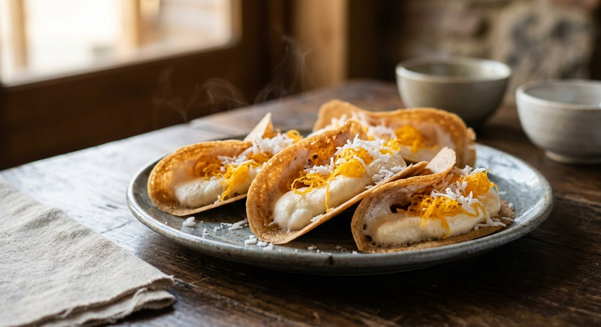

Wafer-thin rice-flour shells, a meringue that cooks and puffs the moment it touches the pan, golden egg threads and coconut — folded in half while they still crackle.

ขนมเบื้อง is the two-part trick of Thailand's market stalls: a batter smeared so thin the shell shatters, and a sweet meringue that bakes and puffs the second it lands on the hot pan. Aroifin describes it as a dessert handed down from the grandparents' generation — one that many vendors have turned into a full-time trade — and TrueID notes that wherever you find a Thai market, a khanom buang stall is never far away. The classic topping is ฝอยทอง, the golden egg-yolk threads of Thai sweets, scattered over grated coconut.
The modern home version — the one Aroifin and Kapook (via Pantip member Diary Delicious) publish — builds the batter from rice flour and mung bean flour loosened with ice-cold water, a whole egg and palm sugar. But the older recipes insist on the crispness aids the quick version drops: Wongnai's ครูโย roasts and grinds whole mung beans at home, then kneads the flour with lime water, salt and a duck egg yolk; Pannipa's uses rice flour alone, sweetened with coconut sugar, and also works in น้ำปูนใส, the clear slaked-lime water that keeps the shell brittle.
The fillings then split the stall in two. The sweet half — foi thong and grated coconut — is universal. The savoury half has its own schools: Pannipa fries grated mature coconut in shrimp fat with salt and kaffir lime leaves until dry and loose, while ครูโย stir-fries chopped shrimp with garlic, pepper and grated coconut, and both finish with spring onion and sesame. Fold, rest on the rack, and eat warm.
| Thai | English | Amount |
|---|---|---|
| แป้งข้าวเจ้า | Rice flour | 100 g |
| แป้งถั่วเขียว (หรือแป้งซาหริ่ม) | Mung bean flour | 50 g |
| น้ำเย็นจัด | Ice-cold water | 150 g |
| ไข่ไก่ | Egg | 1 |
| น้ำตาลปี๊บ | Palm sugar | 100 g |
| ไข่ขาว | Egg whites | ¾ cup (about 2 eggs) |
| น้ำตาลไอซิ่ง หรือน้ำตาลทรายละเอียด | Icing sugar | 1 cup |
| น้ำมะนาว | Lime juice | A few drops |
| ฝอยทอง | Foi thong (golden egg-yolk threads) | As needed |
| มะพร้าวขูด | Grated coconut | As needed |
The old-style batch (Wongnai, ครูโย): roast 300 g skinless mung beans, cool, grind fine and measure 2 cups; knead with 1 duck egg yolk, 2 tbsp lime water, 1 tbsp palm sugar, ¼ tsp salt and 1 tbsp plain flour; rest 20 minutes. Pannipa's โบราณ bowl: 200 g rice flour only, 200 g coconut sugar, 2–3 tbsp lime water, 150 ml water and 3 eggs — the yolks go into the batter, two of the whites into the cream. Her savoury filling fries 100 g finely grated mature coconut in 2 tbsp oil with shrimp fat and salt, plus 1–2 very finely sliced kaffir lime leaves, until dry and loose (see the disagreement below).
The flour. Aroifin and Kapook use shop-bought rice flour plus mung bean flour. ครูโย roasts and grinds whole mung beans at home (300 g to 2 cups) and adds a spoon of plain flour for the knead. Pannipa drops the beans entirely — rice flour alone, with eggs for structure.
The lime water. ครูโย and Pannipa both knead น้ำปูนใส — clear slaked-lime water — into the batter for crispness that lasts. The modern home version drops it completely. If your khanom buang softens within the hour, that's the missing ingredient.
The batter sweetener. Palm sugar in Aroifin, Kapook and ครูโย; coconut sugar in Pannipa. Both must dissolve fully — a stray lump of either burns on the pan.
The cream. Icing-sugar meringue (Aroifin, Kapook) or granulated sugar poured in gradually (Pannipa). ครูโย offers two alternatives: hot syrup whipped into the whites, which cooks the egg — for anyone wary of raw egg white — or the truly old-school route with no meringue at all: the egg white kneaded with palm sugar until thick, smeared straight onto the shell.
Sweet, savoury, or both. Aroifin and Kapook publish the sweet-only crepe: foi thong and grated coconut. ครูโย and Pannipa make both, and disagree on the savoury filling — chopped shrimp stir-fried with garlic, pepper and grated coconut (ครูโย) versus grated coconut fried in shrimp fat with salt and kaffir lime leaves (Pannipa). Both top it with spring onion and sesame.
This recipe is translated from the following Thai-language sources. Where they disagree, we've said so.
1. Aroifin — "วิธีทำ ขนมเบื้อง แป้งกรอบ ๆ ไส้หวานหอม อร่อยฟินทุกคำ!" (the recipe used here) — aroifin.com
2. Kapook — "ขนมเบื้องกรอบ ไส้ตูม ทำง่าย ๆ ใช้แค่กระทะเทฟลอน" by Diary Delicious, Pantip member (the same home batter, made on a non-stick pan) — cooking.kapook.com
3. Wongnai — "ขนมเบื้องโบราณ ไส้ครีม" by ครูโย โยโฮมคาเฟ่ (the old-style roasted mung bean batter and hot-syrup cream) — wongnai.com
4. Wongnai — "ขนมเบื้องโบราณ" by Pannipa Makvilai (the rice-flour batter and the savoury coconut–kaffir lime filling) — wongnai.com
5. TrueID Food — "ขนมเบื้องแบบ D.I.Y. ใครๆก็ทำได้ง่ายมากๆ" (background: the dessert's long history and its fixed place at Thai markets) — food.trueid.net